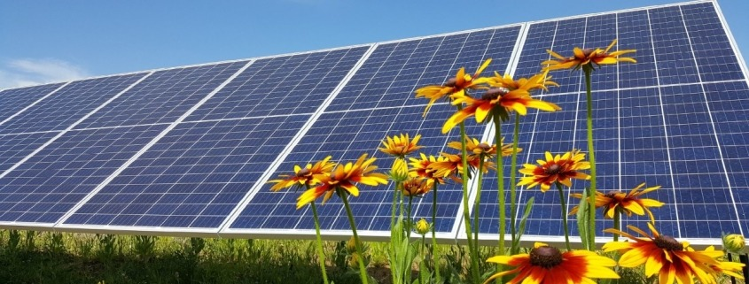

Smart Grid?
Maybe you have heard of the Smart Grid on the news or from your energy provider. But not everyone knows what the grid is, let alone the Smart Grid. "The grid," refers to the electric grid, a network of transmission lines, substations, transformers and more that deliver electricity from the power plant to your home or business. It’s what you plug into when you flip on your light switch or power up your computer. Our current electric grid was built in the 1890s and improved upon as technology advanced through each decade. Today, it consists of more than 9,200 electric generating units with more than 1 million megawatts of generating capacity connected to more than 300,000 miles of transmission lines. Although the electric grid is considered an engineering marvel, we are stretching its patchwork nature to its capacity. To move forward, we need a new kind of electric grid, one that is built from the bottom up to handle the groundswell of digital and computerized equipment and technology dependent on it—and one that can automate and manage the increasing complexity and needs of electricity in the 21st Century.
What Makes a Grid “Smart?”
In short, the digital technology that allows for two-way communication between the utility and its customers, and the sensing along the transmission lines is what makes the grid smart. Like the Internet, the Smart Grid will consist of controls, computers, automation, and new technologies and equipment working together, but in this case, these technologies will work with the electrical grid to respond digitally to our quickly changing electric demand.
What does a Smart Grid do?
The Smart Grid represents an unprecedented opportunity to move the energy industry into a new era of reliability, availability, and efficiency that will contribute to our economic and environmental health. During the transition period, it will be critical to carry out testing, technology improvements, consumer education, development of standards and regulations, and information sharing between projects to ensure that the benefits we envision from the Smart Grid become a reality. The benefits associated with the Smart Grid include:
Today, an electricity disruption such as a blackout can have a domino effect—a series of failures that can affect banking, communications, traffic, and security. This is a particular threat in the winter, when homeowners can be left without heat. A smarter grid will add resiliency to our electric power System and make it better prepared to address emergencies such as severe storms, earthquakes, large solar flares, and terrorist attacks. Because of its two-way interactive capacity, the Smart Grid will allow for automatic rerouting when equipment fails or outages occur. This will minimize outages and minimize the effects when they do happen. When a power outage occurs, Smart Grid technologies will detect and isolate the outages, containing them before they become large-scale blackouts. The new technologies will also help ensure that electricity recovery resumes quickly and strategically after an emergency—routing electricity to emergency services first, for example. In addition, the Smart Grid will take greater advantage of customer-owned power generators to produce power when it is not available from utilities. By combining these "distributed generation" resources, a community could keep its health center, police department, traffic lights, phone System, and grocery store operating during emergencies. In addition, the Smart Grid is a way to address an aging energy infrastructure that needs to be upgraded or replaced. It’s a way to address energy efficiency, to bring increased awareness to consumers about the connection between electricity use and the environment. And it’s a way to bring increased national security to our energy System—drawing on greater amounts of home-grown electricity that is more resistant to natural disasters and attack.
Copyright © Smart Grid
Developers